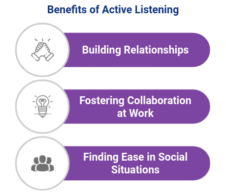

You'll have more friends and you'll be more focused and learn more. Active listening builds trust and strong relationships.active listening can help you solve problems paying attention to what they have to say listening that's a good way to prevent conflict.active listening helps you not miss any important information.and active listening can make you smarter and have more knowledge.
